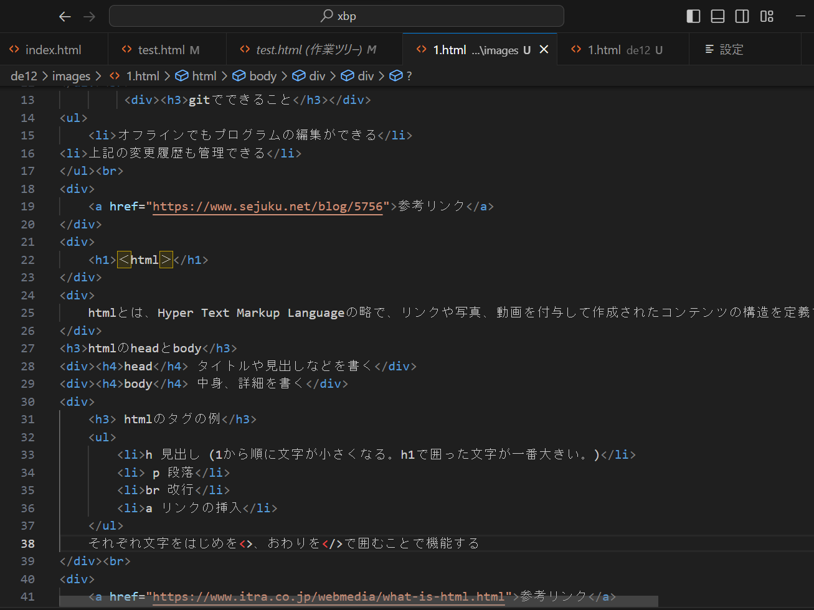

gitとは、プログラムのソースコードなどの変更履歴を記録したり、追跡するための分散型バージョン管理システムのこと。
gitでできること
- オフラインでもプログラムの編集ができる
- 上記の変更履歴も管理できる
＜html＞
htmlとは、Hyper Text Markup Languageの略で、リンクや写真、動画を付与して作成されたコンテンツの構造を定義するマークアップ言語のこと。
htmlのheadとbody
head
タイトルや見出しなどを書く
body
中身、詳細を書く
htmlのタグの例
- h 見出し (1から順に文字が小さくなる。h1で囲った文字が一番大きい。)
- p 段落
- br 改行
- a リンクの挿入
それぞれ文字をはじめを半角の＜＞、おわりを半角の＜/＞で囲むことで機能する

(htmlのタグの実際の例)